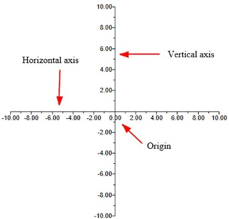
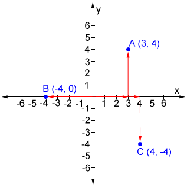
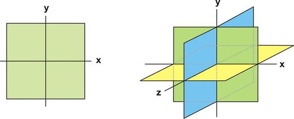
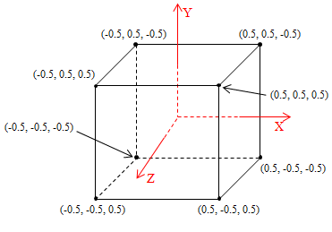
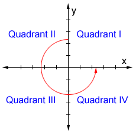
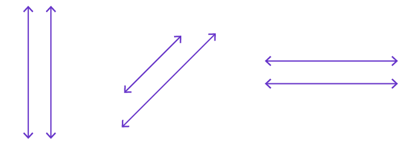
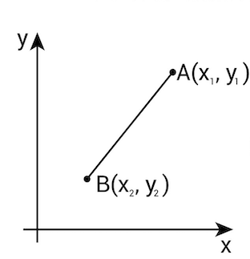

Analytical Geometry¶
Analyticl geometry is the study of geometry using coordinate system. This topic is also known as coordinate geometry or Cartesian geometry.
Number Line¶
Keywords -
- Horizontal axis (x-axis)
- Vertical axis (y-axis)
- Origin (the point of intersection of 2-axis)

Coordinates¶
- A set of 2-values that shows the exact location of a point in the coordinate plane.
- Values are written inside parenthesis in x,y order (x,y).
- Examples
- coordinates of a point A(3,4)
- coordinates of a point B(-4,3)
- coordinates of a point C(4,-4)

Coordinate Plane¶
- A coordinate plane is a 2-d grid to represent shape and location of 2-d geometry. For 2-d geometry, it typically includes x-axis and y-axis.
- The key purpose is to represent and visualize the location of objects in space.
- For 3-d objects, 3-d grid is used which includes x-axis, y-axis, and z-axis.


Quadrants¶
- The intersection of x-axis and y-axis in the coordinate plane divides plane into 4 equal parts.
- These parts are called quadrants because each part represents one-quarter of whole coordinate plane.
- Quadrants are labelled in roman characters - I, II, III, and IV.
- To label the quadrants correctly, move counter-clockwise starting from quadrant presenting (+x,+y) region, thus
- Quadrant I = (+,+)
- Quadrant II = (-,+)
- Quadrant III = (-,-)
- Quadrant IV = (+,-)

Point¶
- A Point is represented by dot (.) on a coordinate plane.
- 0-dimensional object since it has no length, no width, no height and no depth.
- It only has location which is presenting in coordinates form (x,y).
- Examples
- Point A(3,4)
- Point B(-4,3)
- Point C(4,-4)
Line¶
- 1-dimensional object that has length but no width or height.
- Line never ends therefore both ends of a line are marked with arrow marks.

Line Segment¶
- Part of a line with 2 fixed end-points. In other words, you need 2 points to draw a line segment.
- Usually abbreviated as a line.
- Image below shows a line-segment "xy" on a line "N".

Distance between 2-points or Length of line segment¶
- Below is the formula to find
- Distance between any 2 points
- Length of a line segment
\[ distance \ or \ length = \sqrt{(\Delta x)^2 + (\Delta y)^2}
= \sqrt{(x_2 - x_1)^2 + (y_2 - y_1)^2} \]
